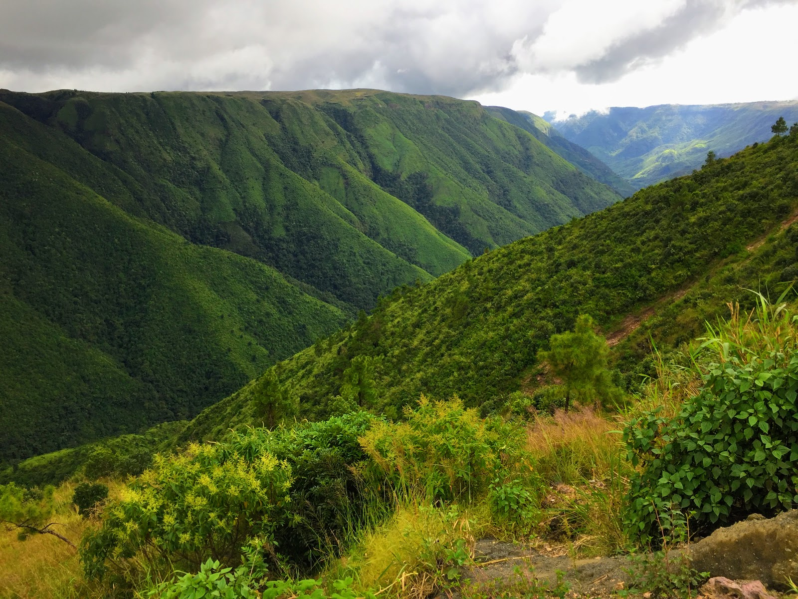
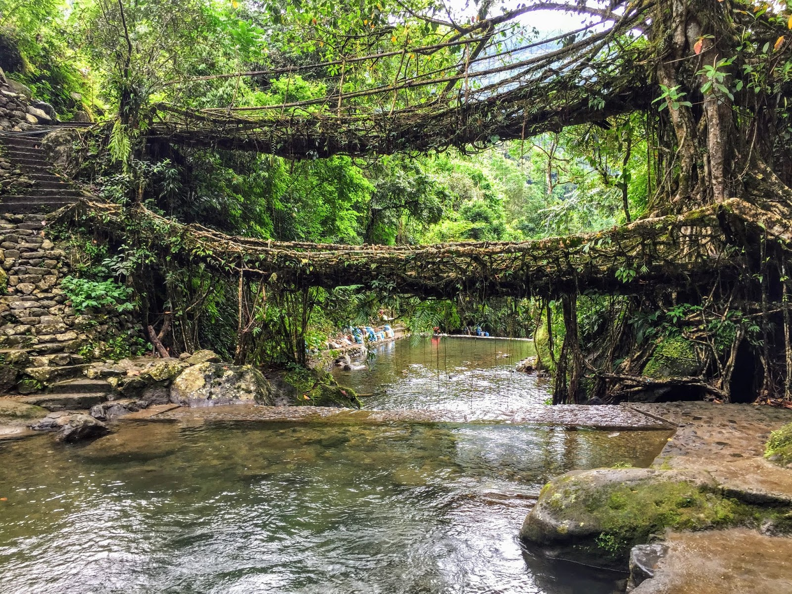

Cherrapunji or Sohra - October Drizzles
THE WAY I SEE IT, IF YOU WANT THE RAINBOW, YOU GOTTA PUT UP WITH THE RAIN. ~ DOLLY PARTON

Laitlum Grand Canyon View from Shillong - Cherrapunji Highway
Once I started for Cherrapunji, it was cold morning already with no sun and the sky covered with blanket of cloud. The sky was white and I knew that it is going to rain today. Also, the Geography books that I read since my childhood told me, Cherrapunji receives the highest rainfall every year. So it was sure that was going to rain today.
I started in bright sun at around 10AM in the morning but while I reach the Latilum, the sun was no more following. From highway to Cherrapunji, it was an amazing view of Latilum Grand Canyon. The green lush hills, all standing together like a band and the winds playing the beautiful music in synchronicity. I took a break and enjoyed the view before continuing.
By around 5PM, I reached the calm and serene Sohra, where I checked into my hotel and took some rest from long driving day. Late in the evening, I explored the surroundings. There were no big restaurants or shops. Local people running canteens and selling daily goods across corners. The most amazing thing I noticed all the way in Meghalaya that everywhere I went, it was pretty neat and clean. I had my dinner and came back to room. Also it started drizzling.
Next day was warm. I woke up early in the morning at 5AM and started for the Double Decker Root Bridge because I wanted to see this natural bridge formed by locked roots of Banyan tree. It was not easy to reach there. After 12km of bike ride into the valley, I reached a stop from where I had to trek for about 6KM. I was alone, tired and scared of the jungle at 6.30AM in the morning. I didn't knew what's ahead. So I took a local guide with me. His name was Kevin. I had a bluetooth speaker in which I was playing few songs so Kevin asked me to play few of his favorites. I explored great 90's music with him and one of my favorite is Country Roads take me home by John Denver.
We trekked to Living root bridge and it was magnificent.

Double Decker Living Root Bridge - Tyrna Village, Cherrapunji
I was all exhausted with the 6km already and I had to trek back so to keep up my energy, I had maggi and tea at Wahlang Tea Stall. After an hour break I started to trek back and it was not easy. With energy going down and stairs going up, this was the toughest afternoon ever. This 12km of round trip had got me cramps in my legs so I went back and took rest for the day.
The next day I went for the great view of Seven Sister Waterfalls, Eco Park and Mawsmai Caves which were equally beautiful places. Did some shopping, enjoyed the drizzles in the evening and took rest to start the journey next day to Dawki.